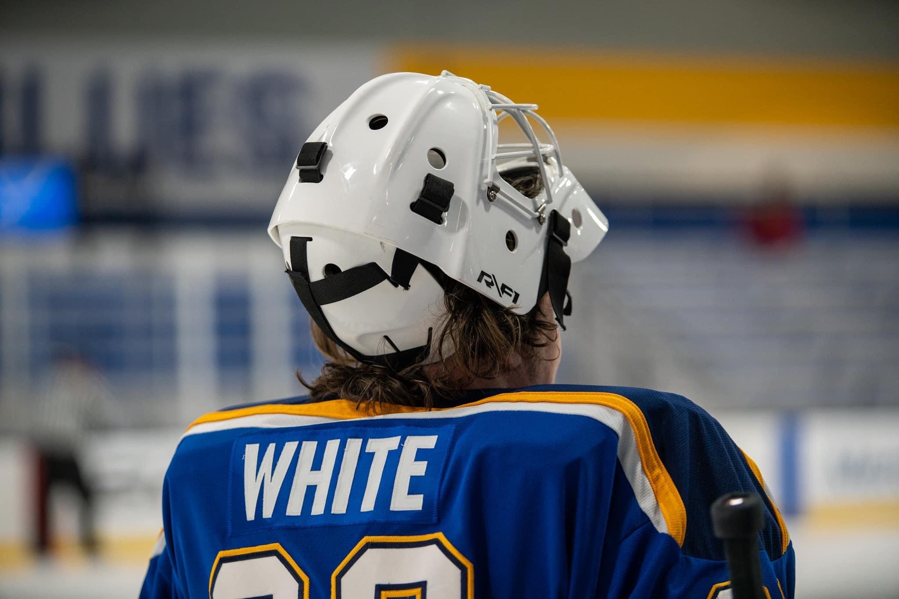

Justin White Online Resume

Summary
The objective of this online resume is to show my ability with HTML in hopes of getting a job as a Web Developer.
Education
- Western Governors University - Cybersecurity and Information Assurance (2018-2020)
- Southern Illinois University Edwardsville - Secondary Education (2016-2018)
- Austin Peay State University - General Studies (2007-2009)
Employment
- Field Applications Engineer - Commscope (2022-Current)
- Measuring and documenting radio waves and frequencies using Spectrum Analyzers
- Use theodolite to measure look angles at customer specified locations for purposes of satellite communication
- Conduct site surveys that measure radiation levels to ensure compliance with FCC standards.
- Maintain compliance in regards to Cybersecurity to ensure network integrity.
- Network Operations Security Center Supervisor - Inmarsat Government (2018-2022)
- Monitor satellite links for customer in austere environments to maintain network integrity and maximum uptime for Voice and IP based communications.
- Familiar with multiple microwave bands (L, C, X, Ku, K, KA) and their capacity to operate in a given environment.
- Senior Technical Trainer (WIN-T) - LEIDOS (2016-2018)
- Satellite Communications Systems Operator-Maintainer - US Army (2010-2018)
Skills
- Microwave frequencies
- Satellite Communication
- ITIL v3
- Military operations
- Comsec
- Self Learning